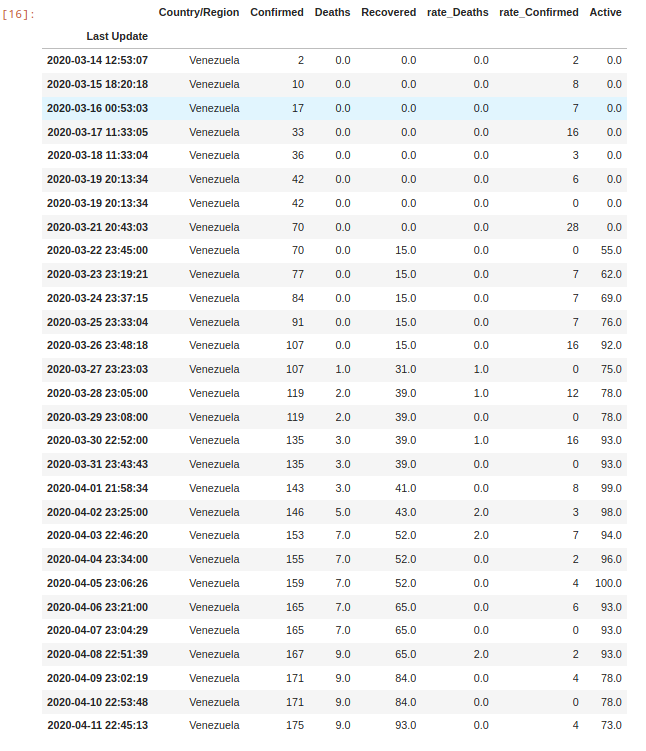
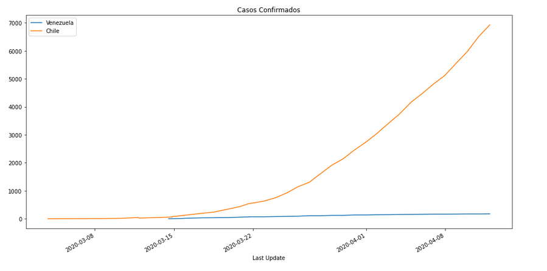
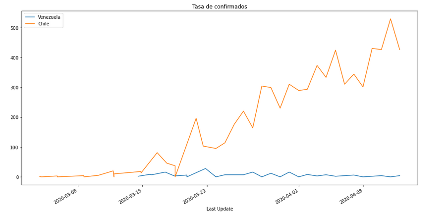
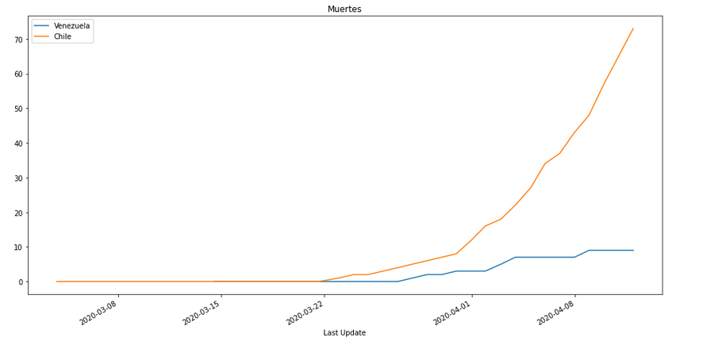
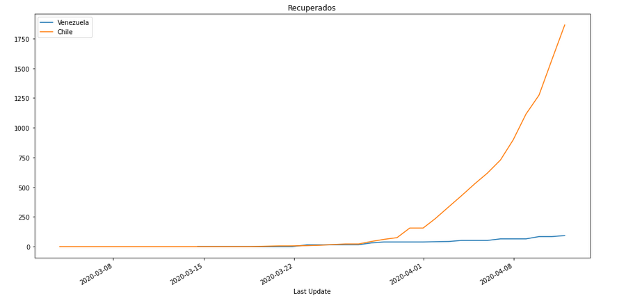

Explorando datos del Covid19 con pandas.
Posted on sáb 14 marzo 2020 in Tutorial de Python • 4 min read
Existen varios sitios que muestran un dashboard de la información del Covid-19, por ejemplo arcgis, o para el caso de Venezuela se tiene covid19-venezuela.
Este artículo se basa en el artículo de Learning pandas by Exploring COVID-19 Data, el CDC de la Unión Europea ECDC, otra fuente de datos Coronavirus Source Data, el repositorio Universidad Johns Hopkins; el cual se basa las fuentes de datos de este artículo.
La forma de acceder a los datos localmente es haciendo clone y luego pull:
git clone https://github.com/CSSEGISandData/COVID-19.git
Para actualizar:
cd COVID-19
git pull origin master
Se necesita instalar pandas, csv y matplotlib:
pip3 install pandas csv matplotlib
Al descargarlo, el proceso sería el siguiente:
- Lectura de csv
- Procesar datos
- Gráficar
A continuación el código:
# In[1]:
import pandas as pd
import datetime
import requests
from pathlib import Path
import matplotlib.pyplot as plt
%matplotlib inline
Ruta de los archivos csv
# In[2]:
path = "./COVID-19/csse_covid_19_data/csse_covid_19_daily_reports"
Función de listar archivos
# In[3]:
def ls3(path):
"""
Retorna una lista de archivos de una ruta (path) dada.
:param path: Ruta del directorio donde se encuentran los archivos a listar
:return filenames
"""
return [obj.name for obj in Path(path).iterdir() if obj.is_file()]
Función de obtención de datos
# In[4]:
def getData(country="Venezuela",date="03-13-2020",path=path,encoding="ISO-8859-1"):
"""
Obtiene los datos desde una fecha y para un país, de la ruta definida de archivos csv.
:param country: País que se quiere generar el dataframe
:param date: Fecha desde que se va a tomar los datos para el dataframe
:param path: Ruta donde se encuentran los archivos csv
:param encoding: Codificación a la que se encuentran los archivos csv.
:return df: Dataframe con los datos extraídos de los csv desde una fecha dada y para un país.
"""
# Se obtiene los nombres de los archivos.
lista = [file for file in ls3(path) if file.split(".")[-1] == "csv"]
# Se lee los archivos csv y se convierten en varios dataframe en un diccionario ordenados por fecha.
df = {item.split(".")[0]:pd.read_csv(path+ "/" +item,encoding=encoding) for item in lista}
# Se lista las fechas
dates = [item.split(".")[0] for item in lista]
# Se renombras las columnas de los dataframes.
for i,date in enumerate(dates):
if "Country_Region" in list(df[date].columns) or "Province_State" in list(df[date].columns) or "Last_Update" in list(df[date].columns):
df[date].rename(columns={"Country_Region": 'Country/Region',"Last_Update":"Last Update","Province_State": "Province/State"},inplace=True)
# Se convierten las fechas en datetime y se ordenan
dates2 = sorted([datetime.datetime.strptime(date,"%m-%d-%Y") for date in dates])
# Se ordena los dataframes en una lista
data = [df[d.strftime("%m-%d-%Y")][df[d.strftime("%m-%d-%Y")]["Country/Region"] == country] for d in dates2 if d >= datetime.datetime.strptime(date,"%m-%d-%Y")]
#Se concatena los dataframes en uno sólo y se retorna
data_df = pd.concat(data)
return data_df
Función de agregar columna rate
# In[5]:
def AddColumnRate(df,column_name):
"""
Agrega una columna al dataframe, dicha columna es la diferencia entre la próxima row y el row actual
:param df: DataFrame a agregar la columna.
:param column_name: Columna a la que se quiere calcular la diferencia.
:return df: Retorna un dataframe con la columna adicional que tiene la diferencia por día.
"""
elements = []
# Se recorre el dataframe
for i in range(len(df)):
# Si es la fila inicial se toma su valor
if i == 0:
elements.append(df.iloc[0][column_name])
else:
# Si no es el inicial se calcula la diferencia de su valor actual con el anterior
elements.append(df.iloc[i][column_name] - df.iloc[i-1][column_name])
# Se agrega la lista al dataframe
df.insert(4,f"rate_{column_name}",elements)
return df
Función de procesar datos
# In[6]:
def DataProcessor(df):
"""
Se remueve columnas del dataframe, se define el index, se reemplaza los NA y se agrega dos columnas.
:param df: Dataframe a procesar
:return df: DataFrame procesado
"""
# Se obtiene el nombre de una columna a remover
remove = list(df.columns)[0]
# Se remueve la lista de columnas
df.drop(labels=["Province/State","Latitude","Longitude","Admin2","Lat","Long_","Combined_Key","FIPS",remove],axis=1,inplace=True)
df.drop(labels=[df.columns[-2]],axis=1,inplace=True)
# Se reemplaza NA por 0.
df.fillna(0,inplace=True)
# Se conviernte las fechas que son string a datetime
df['Last Update']= pd.to_datetime(df['Last Update'])
# Se define las fechas como indice
df.set_index("Last Update",inplace=True)
# Se calcula los rate de confirmados y muertes
df = AddColumnRate(df,"Confirmed")
df = AddColumnRate(df,"Deaths")
return df
Función de crear gráficas
# In[7]:
def PlotData(df,column,title):
"""
Gráfica una columna del dataframe
:param df: Dataframe a gráficar
:param column: Columna a graficar
:param title: Título de la gŕafica
"""
# Se recorre los países de la lista
for i,country in enumerate(countries):
if i == 0:
# Si es el primer país se define el título de la gráfica
df[country][column].plot(label=country,figsize=(16,8),title=title)
else:
df[country][column].plot(label=country,figsize=(16,8))
plt.legend();
Obtención y procesamiento de los datos
# # Obtención de datos
# In[8]:
# Paises a analizar
countries = ["Venezuela","Chile"]
# In[9]:
# Fecha de extracción de datos
date= "02-20-2020"
# In[10]:
# Construcción de los dataframes
df = {country: getData(country=country,date=date) for country in countries}
# In[11]:
# Procesar los datos
df2 = {country: DataProcessor(df[country]) for country in countries}
DataFrame
DataFrame de Venezuela:
df2["Venezuela"]

Generar gráficos
Casos Confirmados
# In[12]:
PlotData(df2,"Confirmed","Casos Confirmados")

Tasa de Confirmados
# In[13]:
PlotData(df2,"rate_Confirmed","Tasa de confirmados")

Muertes
# In[14]:
PlotData(df2,"Deaths","Muertes")

Recuperados
# In[15]:
PlotData(df2,"Recovered","Recuperados")

El notebook del procesamiento de los datos lo pueden encontrar en github
¡Haz tu donativo! Si te gustó el artículo puedes realizar un donativo con Bitcoin (BTC) usando la billetera digital de tu preferencia a la siguiente dirección: 17MtNybhdkA9GV3UNS6BTwPcuhjXoPrSzV
O Escaneando el código QR desde la billetera: